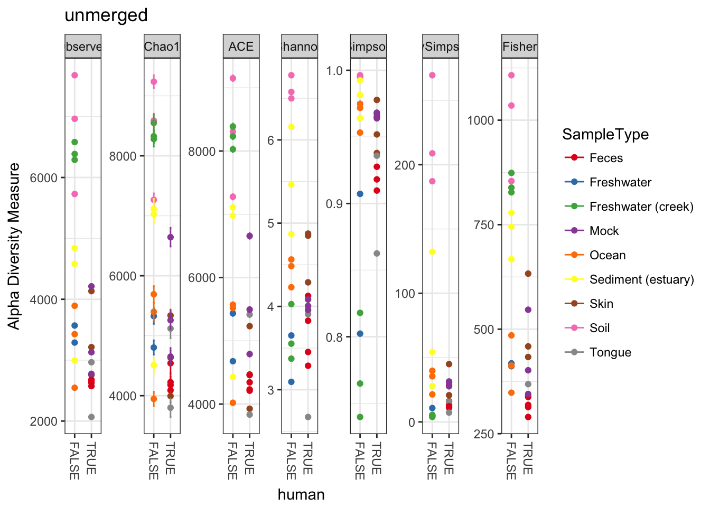
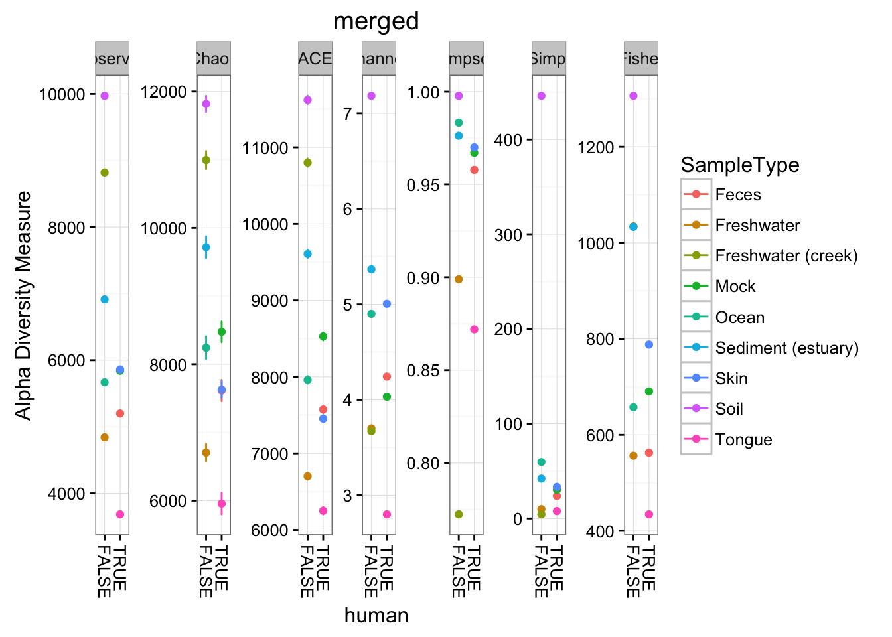
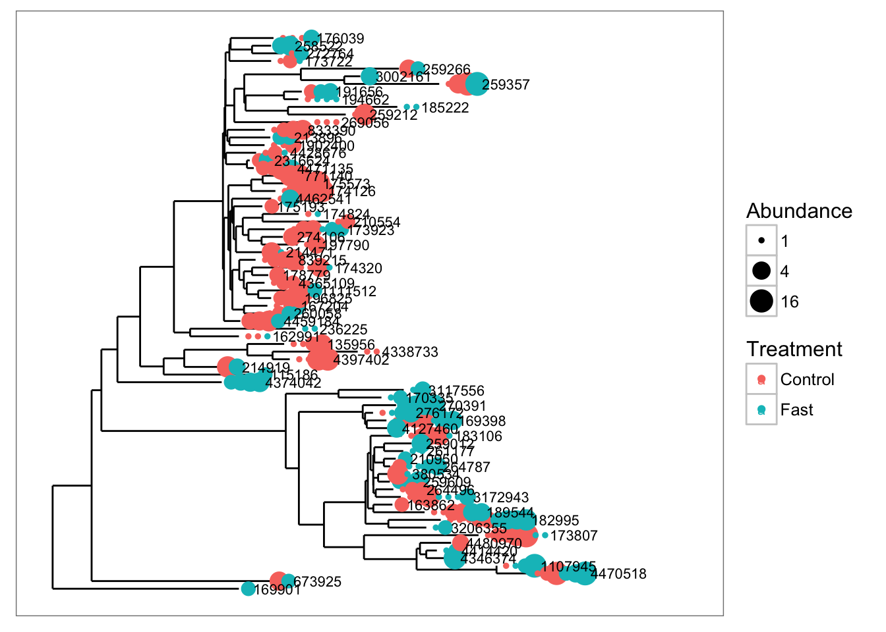
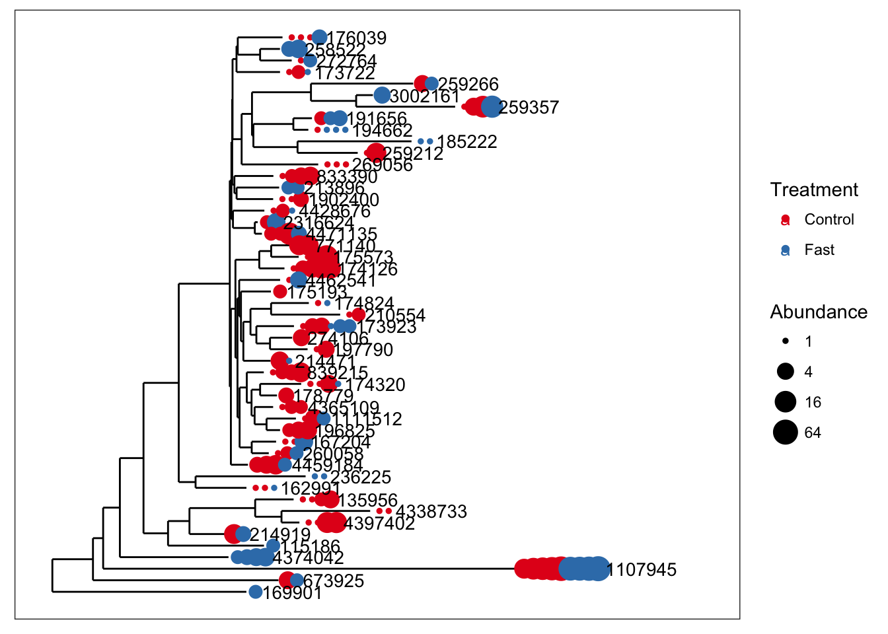

The phyloseq project includes support for two completely different categories of merging data objects.
merge_samples() merge_taxa()Merging OTU or sample indices based on variables in the data can be a useful means of reducing noise or excess features in an analysis or graphic. Some examples might be to merge the samples in a dataset that are from the same environment, or orthogonally, to merge OTUs that are from the same taxonomic genera. Often this takes the form of a table-join, where non-matching keys are omitted in the result. In this case, keys are Sample IDs or Taxa IDs, respectively.
merge_phyloseq()Merging separate data objects is especially useful for manually-imported data objects, especially when one of the data objects already has more than one component and so is a phyloseq-class. While the first category of merging functions is useful for direct manipulations of the data for analytical purposes, merge_phyloseq is a convenience/support tool to help get your data into the right format.
merge_samples can be very useful if you’d like to see what happens to an analysis if you remove the indivual effects between replicates or between samples from a particular explanatory variable. With the merge_samples function, the abundance values of merged samples are summed, so make sure to do any preprocessing to account for differences in sequencing effort before merging or you will achieve a sequencing-effort-weighted average (which you may want, but keep in mind).
Let’s first remove unobserved OTUs (sum 0 across all samples), and add a human-associated variable with which to organize data later in the plots.
library("phyloseq"); packageVersion("phyloseq")## [1] '1.22.3'Load data, remove empty samples, add a new sample_data variable to the dataset.
data(GlobalPatterns)
GP = GlobalPatterns
GP = prune_taxa(taxa_sums(GlobalPatterns) > 0, GlobalPatterns)
humantypes = c("Feces", "Mock", "Skin", "Tongue")
sample_data(GP)$human <- get_variable(GP, "SampleType") %in% humantypesNow on to the merging examples
mergedGP = merge_samples(GP, "SampleType")
SD = merge_samples(sample_data(GP), "SampleType")
print(SD[, "SampleType"])## SampleType
## Feces 1
## Freshwater 2
## Freshwater (creek) 3
## Mock 4
## Ocean 5
## Sediment (estuary) 6
## Skin 7
## Soil 8
## Tongue 9print(mergedGP)## phyloseq-class experiment-level object
## otu_table() OTU Table: [ 18988 taxa and 9 samples ]
## sample_data() Sample Data: [ 9 samples by 8 sample variables ]
## tax_table() Taxonomy Table: [ 18988 taxa by 7 taxonomic ranks ]
## phy_tree() Phylogenetic Tree: [ 18988 tips and 18987 internal nodes ]sample_names(GP)## [1] "CL3" "CC1" "SV1" "M31Fcsw" "M11Fcsw" "M31Plmr"
## [7] "M11Plmr" "F21Plmr" "M31Tong" "M11Tong" "LMEpi24M" "SLEpi20M"
## [13] "AQC1cm" "AQC4cm" "AQC7cm" "NP2" "NP3" "NP5"
## [19] "TRRsed1" "TRRsed2" "TRRsed3" "TS28" "TS29" "Even1"
## [25] "Even2" "Even3"sample_names(mergedGP)## [1] "Feces" "Freshwater" "Freshwater (creek)"
## [4] "Mock" "Ocean" "Sediment (estuary)"
## [7] "Skin" "Soil" "Tongue"identical(SD, sample_data(mergedGP))## [1] TRUEAs emphasized earlier, the OTU abundances of merged samples are summed. Let’s investigate this ourselves looking at just the top10 most abundance OTUs.
OTUnames10 = names(sort(taxa_sums(GP), TRUE)[1:10])
GP10 = prune_taxa(OTUnames10, GP)
mGP10 = prune_taxa(OTUnames10, mergedGP)
ocean_samples = sample_names(subset(sample_data(GP), SampleType=="Ocean"))
print(ocean_samples)## [1] "NP2" "NP3" "NP5"otu_table(GP10)[, ocean_samples]## OTU Table: [10 taxa and 3 samples]
## taxa are rows
## NP2 NP3 NP5
## 329744 91 126 120
## 317182 3148 12370 63084
## 549656 5045 10713 1784
## 279599 113 114 126
## 360229 16 83 786
## 94166 49 128 709
## 550960 11 86 65
## 158660 13 39 28
## 331820 24 101 105
## 189047 4 33 29rowSums(otu_table(GP10)[, ocean_samples])## 329744 317182 549656 279599 360229 94166 550960 158660 331820 189047
## 337 78602 17542 353 885 886 162 80 230 66otu_table(mGP10)["Ocean", ]## OTU Table: [10 taxa and 1 samples]
## taxa are columns
## 329744 317182 549656 279599 360229 94166 550960 158660 331820 189047
## Ocean 337 78602 17542 353 885 886 162 80 230 66Let’s look at the merge graphically between two richness estimate summary plots. Note that we are ignoring our own advice and not-performing any preprocessing before this merge. Since these are richness estimates we are probably safe.
plot_richness(GP, "human", "SampleType", title="unmerged")## Warning: Removed 130 rows containing missing values (geom_errorbar).
The merge can do some weird things to sample variables. Let’s re-add these variables to the sample_data before we plot.
sample_data(mergedGP)$SampleType = sample_names(mergedGP)
sample_data(mergedGP)$human = sample_names(mergedGP) %in% humantypes
plot_richness(mergedGP, "human", "SampleType", title="merged")## Warning: Removed 45 rows containing missing values (geom_errorbar).
Perhaps not surprisingly, when we combine the abundances of non-replicate samples from the same environment, the estimates of absolute richness increase for each environment. More to the example, however, the new merged plot is easier to read and interpret, which is one of the reasons one might use the merge_samples function.
One of the sources of “noise” in a microbial census dataset is a fine-scaled definition for OTU that blurs a pattern that might be otherwise evident were we to consider a higher taxonomic rank. The best way to deal with this is to use the agglomeration functions tip_glom or tax_glom that merge similar OTUs based on a phylogenetic or taxonomic threshold, respectively. However, for either function to work, it must be capable of merging two or more OTUs that have been deemed “equivalent”.
The following is an example of merge_taxa in action, using a tree graphic to display the before and after of the merge, and also show how the merge affects not just the OTU table, but all data components with OTU indices.
We will use an example dataset that was previously imported into phyloseq with the variable name closedps and saved within an RData binary file, "example-data.RData".
load("example-data.RData")
plot_tree(closedps, color="Treatment", size="abundance", sizebase=2, label.tips="taxa_names")
Now let’s use merge_taxa to merge the first 8 OTUS of closedps into one new OTU. By choosing 2 as the optional third argument to merge_taxa, we are combining the counts of these 8 OTUs into the index for the second OTU. The default is to use the first OTU of the second argument.
x1 = merge_taxa(closedps, taxa_names(closedps)[3:27], 2)
plot_tree(x1, color="Treatment", size="abundance", sizebase=2, label.tips="taxa_names")
As said earlier, merge_phyloseq is a convenience/support tool to help get your data into the right format. Here is an example in which we extract components from an example dataset, and then build them back up to the original form using merge_phyloseq along the way.
Let’s split apart the “Global Patterns” example dataset into some components
data(GlobalPatterns)
tree = phy_tree(GlobalPatterns)
tax = tax_table(GlobalPatterns)
otu = otu_table(GlobalPatterns)
sam = sample_data(GlobalPatterns)
otutax = phyloseq(otu, tax)
otutax## phyloseq-class experiment-level object
## otu_table() OTU Table: [ 19216 taxa and 26 samples ]
## tax_table() Taxonomy Table: [ 19216 taxa by 7 taxonomic ranks ]As you can see, our new otutax object has just the OTU table and taxonomy table. Now let’s use merge_phyloseq to build up the original GlobalPatterns object, and compare to make sure they are identical. Note how the arguments to merge_phyloseq are a mixture of multi-component (otutax) and single component objects.
GP2 = merge_phyloseq(otutax, sam, tree)
identical(GP2, GlobalPatterns)## [1] TRUEThe merge_phyloseq function will also work even with more than one multiple-component object.
otusamtree = phyloseq(otu, sam, tree)
GP3 = merge_phyloseq(otusamtree, otutax)
GP3## phyloseq-class experiment-level object
## otu_table() OTU Table: [ 19216 taxa and 26 samples ]
## sample_data() Sample Data: [ 26 samples by 7 sample variables ]
## tax_table() Taxonomy Table: [ 19216 taxa by 7 taxonomic ranks ]
## phy_tree() Phylogenetic Tree: [ 19216 tips and 19215 internal nodes ]identical(GP3, GlobalPatterns)## [1] FALSESo this merge appears to have worked. The new object, GP3, looks similar to GlobalPatterns but is not identical. Why? Well, the assumption by merge_phyloseq is that you are atttempting to merge separate sources of abundance data, and so any portion of the OTU tables in the two phyloseq objects that have the same OTU indices are summed together, just like with merge_taxa earlier.
This example scenario was illustrative, but hopefully rare in practice. Nevertheless, just in case, an easy fix would be to extract the unique component of otutax and provide it to merge_phyloseq, instead of the entire phyloseq object. This amounts to a small intuitive modification to the previous merge_phyloseq command:
GP4 = merge_phyloseq(otusamtree, tax_table(otutax))
GP4## phyloseq-class experiment-level object
## otu_table() OTU Table: [ 19216 taxa and 26 samples ]
## sample_data() Sample Data: [ 26 samples by 7 sample variables ]
## tax_table() Taxonomy Table: [ 19216 taxa by 7 taxonomic ranks ]
## phy_tree() Phylogenetic Tree: [ 19216 tips and 19215 internal nodes ]identical(GP4, GlobalPatterns)## [1] TRUE